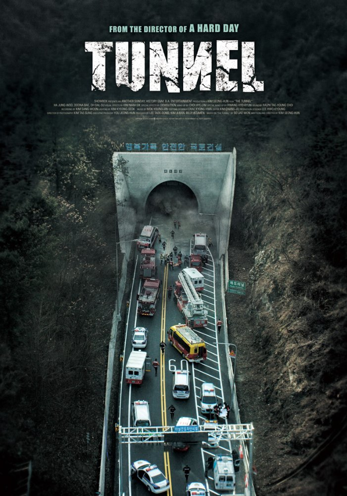
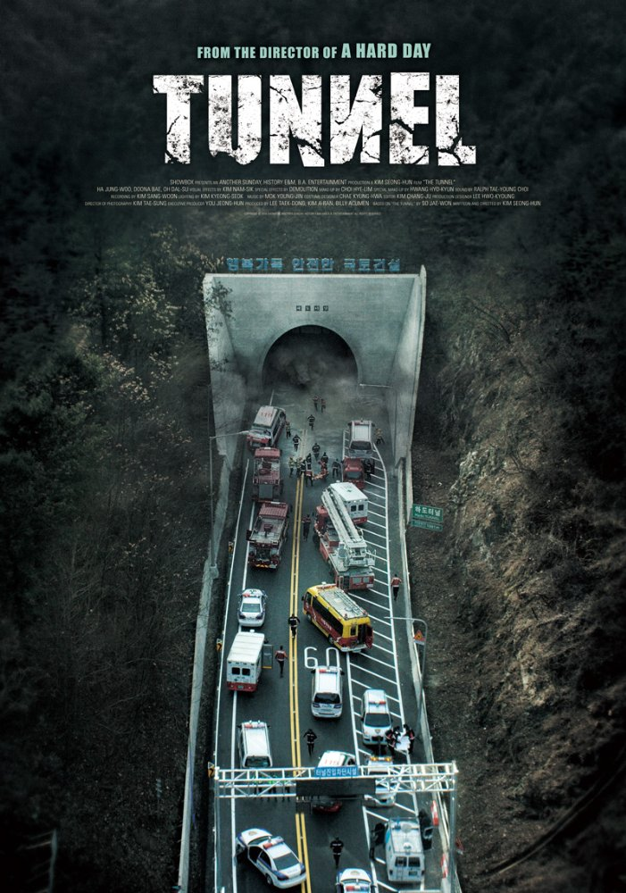

Tunnelr
Kim Seong-hun
Lee Jung-soo (Ha Jung-woo) drives home for his daughter's birthday. While driving through a tunnel that goes through a mountain, the tunnel collapses. When Lee Jung-Soo regains consciousness, he finds himself trapped inside his car. The car itself is buried under tons of concrete and debris. All he has inside the car are his cellphone, two bottles of water and his daughter's birthday cake. He forms a kind of special bond with the head of the rescue team, Dae-kyung, who teaches him how to survive in the tunnel.
The Korean version of the poster has an close up image of the main actor's face, holding a phone in a confined space. The text above the title reads, "You can save me, right?" Although he is holding a phone, he looks hopeless. The Japanese poster has an image of the actor in a destroyed place from further away. He looks exhausted and hopeless in middle of pipes and cement. The U.S. version of the poster eliminated the photo of the actor and featured the image of the setting of the movie. The gate of tunnel if filled with ambulances, police cars, firemen and rescues workers. The disaster occuring in tunnel is well portrayed, but one might expect a story of a group of people waiting for the rescue in the tunnel. The Korean version focused too much on the actor that it did not include the setting well. The Japanese version captured both the situation and emotion of the main actor waiting for rescue in the destroyed tunnel.